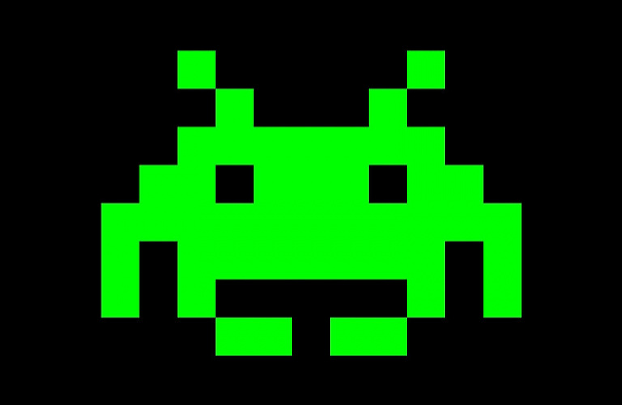

It is well known that in the video game industry, the working conditions are, to phrase it kindly, not the best. Today things start to change as we can see with the recent scandal in Ubisoft about toxic behavior and toxic management or some years ago with the scandal in Quantic Dream. Every year there is a new scandal. In 2020 it was CD PROJEKT RED with the development of their very awaited game Cyberpunk 2077. In all these affairs, there is one word that comes back regularly: “Crunch”. In this article we will see what is this managerial method, what are its consequences and what is done about it
There is not a clear definition of what is a Crunch but we can phrase it that way: it’s a period of time, often before a due date, during which the company asks their employees to do mandatory overtimes. The Crunch is not specific to the video game industry, but it is an important part of it. This is why some people speak about a Crunch Culture in video games. Some studios see it as an integral part of their management. The studio Bioware, for example, speaks about “Bioware Magic”.
Studios like Naughty Dog is also known for numerous Crunches during the development of their games.
Naughty Dog studio
Some could think that this Crunch culture is a consequence of the recent transformation of the industry. With big corporations making games involving billions of dollars and hundreds of employees. But I’m sorry to say that this is not that easy. We can find examples of crunches in games like Super Metroid in 1994 or ET in 1982. This phenomenon is not new and it can be very damaging.
Crunches can happened during long periods of time and can blow out of proportion really fast. In an article from “Game industry.biz” a developer of Neather Realm speaks about 90 hours work by week and this is not without consequences on the health of the employees with Burnout etc.
And that doesn’t stop there. This culture is one of the reasons why the average age of the employees is so low. This industry attracts many young workers and many of them won’t stay long, whether it be because of the numerous layoffs, their working conditions or health problems.
And this won’t change easily. First, because this Crunch culture is in place for years. It’s a relic of the time where video games creators where some passionate students in a garage. Even today, the argument of the passion is often put forward to justify the great pressure put on by the studios or by the employees themselves. These bad working conditions are a real godsend for the big Corporations. But this is also really present in the world of “indie games” (independent games). Method like “Crunch” are institutionalized. Many people think that Crunching is indispensable to create good games and the Crunch is even taught in video games schools. These schools don’t hesitate to encourage their students to stay late to work on their projects with kitchens in the tutorials rooms and heavy workloads.
But, things are slowly evolving. Recently, we have seen the creation of trade union to protect the rights of the workers in the video game industry. There are also little studios, like motion twin, which try to be more horizontal and so limiting the number of Crunch during the development. And these initiatives are successful. In 2018, Motion Twin released Dead cells which became the game of the year.
It’s also really important that people at large are aware of this. Because, by encouraging little initiatives and criticize bad behaviours, maybe, we will be able to change this horrible culture that has clung to the video game industry for so many years
Article about nether realm
The video of Monsieur plouf about the Crunch culture (in French)
The documentary of Game Spectrum about The working conditions in the Video Games industry (in French)
by Baptiste Soullard
